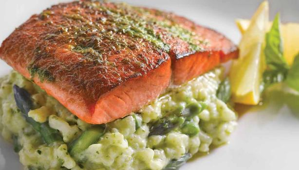
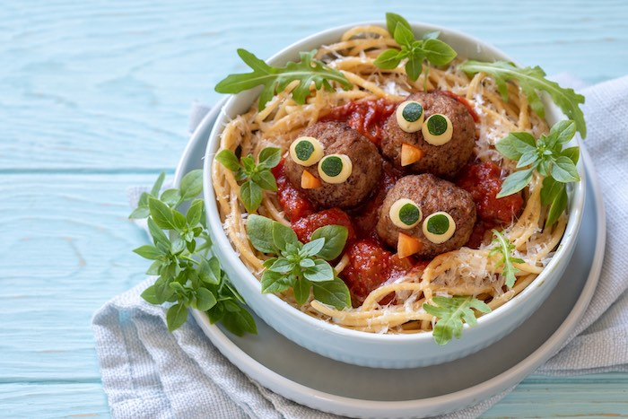
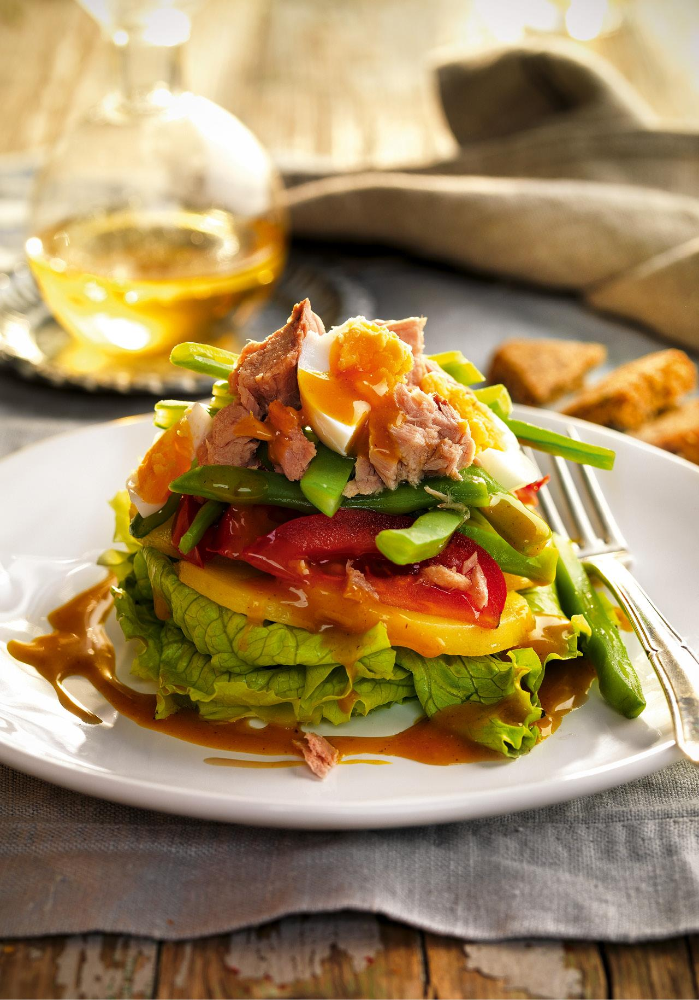
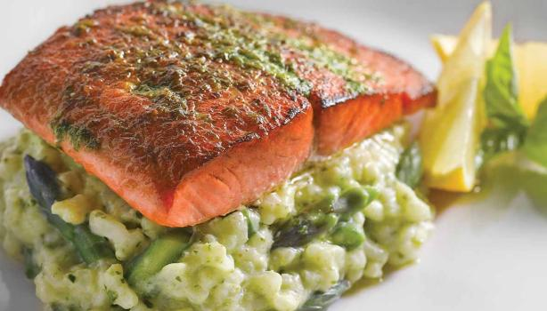
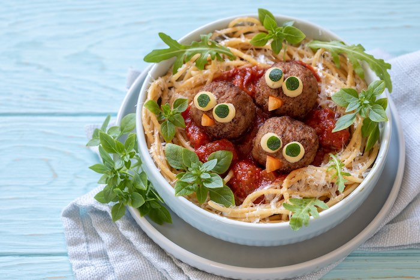
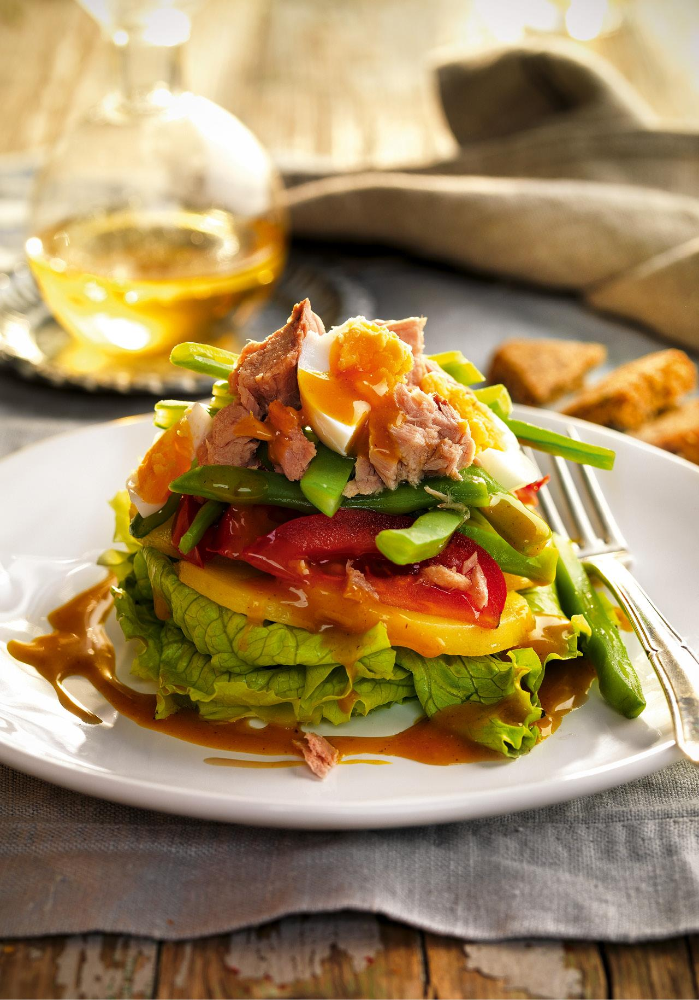
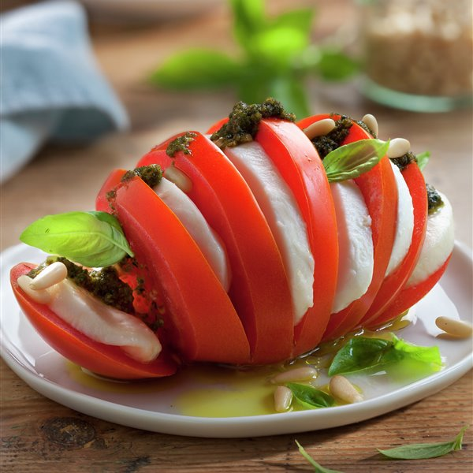
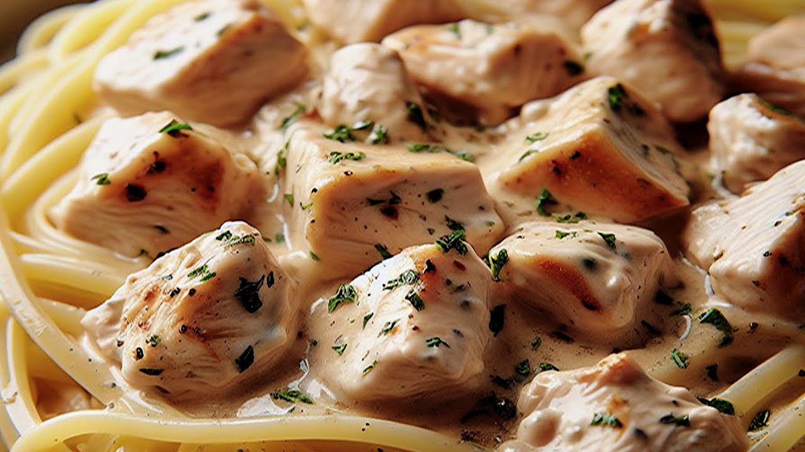
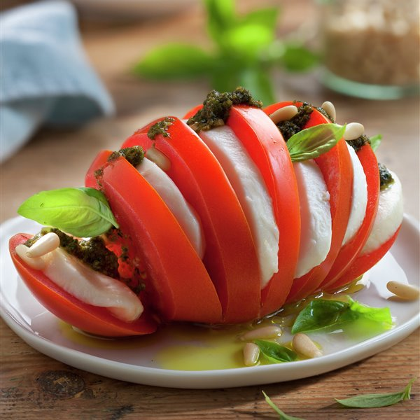
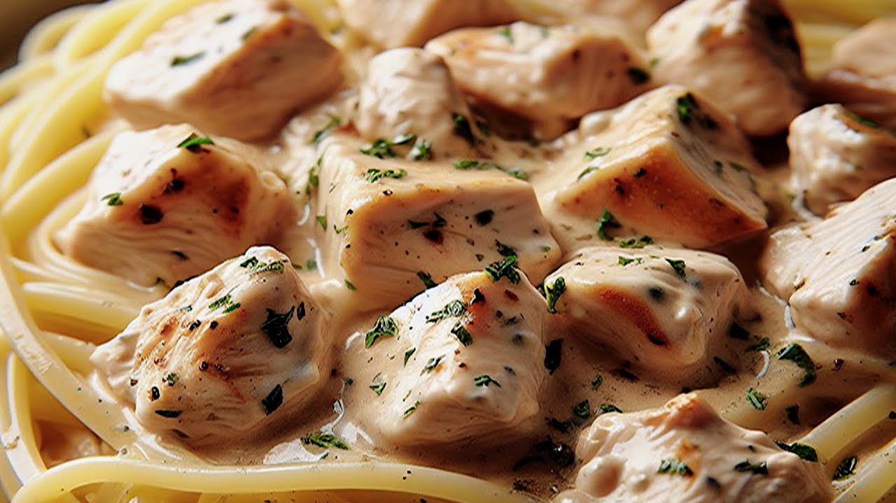

Encuentra tu receta
Recetas de la comunidad

 





 



Recetas Destacadas
Pato a la naranja
El pato a la naranja es un plato clásico francés con pechuga de pato glaseada en salsa de naranja. Es crujiente por fuera, jugoso por dentro y se sirve con guarniciones como puré o vegetales al vapor. Es una elección refinada para eventos especiales.
Tarta de verdura
La tarta de vegetales es una delicia versátil hecha con una base de masa y rellena de una mezcla de vegetales frescos y queso. Se hornea hasta obtener una textura dorada y crujiente. Es una opción sabrosa y saludable para cualquier ocasión.
Papa rellena
La papa rellena es un plato latinoamericano hecho con papas cocidas y rellenas de una mezcla de carne, cebolla y especias. Se empanizan y fríen hasta dorar. Es un bocado crujiente y sabroso, perfecto como aperitivo o plato principal.